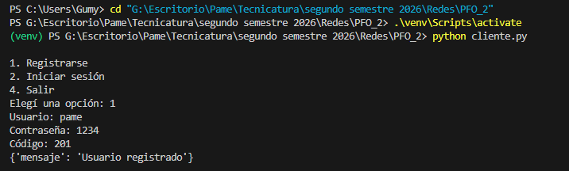
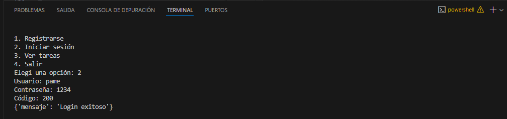
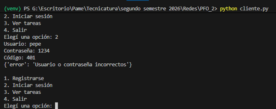
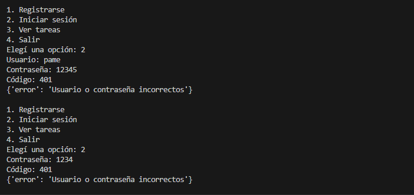
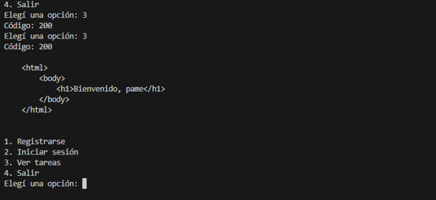
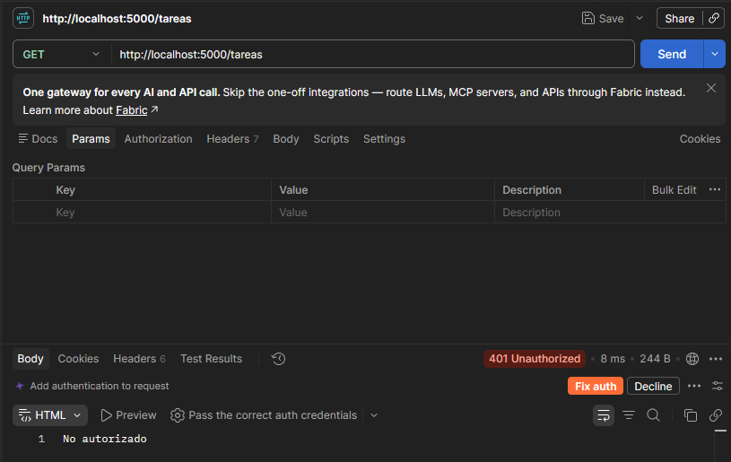

API REST hecha con Flask que permite registrar usuarios, iniciar sesi on y acceder a una pagina de bienvenida protegida con autenticaci on basica (HTTP Basic Auth). Los usuarios persisten en una base de datos SQLite, con las contraseñas guardadas como hash. Incluye un cliente de consola que consume la API usando la libreria requests.
Windows: python -m venv venv
Linux/Mac: python3 -m venv venv
Windows: venv\Scripts\activate
Linux/Mac: source venv/bin/activate
pip install -r requirements.txt
curl -X POST http://localhost:5000/registro -H "Content-Type: application/json" -d "{\"usuario\": \"pame\", \"contraseña\": \"1234\"}"
Respuesta esperada (201): {"mensaje": "Usuario registrado"}
curl -X POST http://localhost:5000/login -H "Content-Type: application/json" -d "{\"usuario\": \"pame\", \"contraseña\": \"1234\"}"
Respuesta esperada (200): {"mensaje": "Login exitoso"}
curl -u pame:1234 http://localhost:5000/tareas
Respuesta esperada (200): un HTML con el texto "Bienvenido, pame".
curl http://localhost:5000/tareas
Respuesta esperada (401): "No autorizado".
Registro exitoso:

Login exitoso:

Login fallido (usuario incorrecto):

Login fallido (contraseña incorrecta):

En los dos casos el servidor responde con el mismo mensaje generico, sin aclarar cual de los dos datos estaba mal. Es una medida de seguridad para no revelar q nombres de usuario existen en el sistema.
Tareas con credenciales:

Tareas sin credenciales:

Porq si alguien accede a la base de datos sin permiso, las contraseñas no qdan expuestas en texto plano. El hash es una transformaci on q no se puede revertir: aunq se vea el valor guardado, no se puede saber cual era la contraseña original. Al hacer login no se compara la contraseña real, sino que se vuelve a calcular el hash de lo q escribió el usuario y se compara contra el hash guardado.
La ventaja es que con SQLite no se necesita instalar ni configurar un servidor de base de datos aparte: todo queda guardado en un solo archivo (tareas.db) dentro del proyecto, lo que lo hace simple para un proyecto chico como este. Ademas viene incluido en la libreria Python, asi q no es necesario instalar nada.
GitHub Pages solo aloja archivos estaticos (HTML, CSS, JS); no puede ejecutar un servidor Flask ni codigo Python. Por eso esta pagina tiene solo la documentacion, mientras que la API real (servidor.py) se tiene que ejecutar localmente en la propia computadora, siguiendo los pasos de la seccion "Como ejecutar".